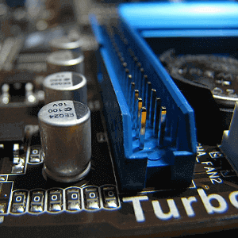

Składamy komputer. Dobór płyty głównej.
Płyta główna (ang. motherboard) jest podstawą każdego zestawu komputerowego. Jest swoistym szkieletem PC, gdyż to w niej montuje się wszystkie podzespoły, jej zadaniem jest zapewnienie prawidłowego działania i współpracy wszystkich części. Choć nie ma ona tak bezpośredniego wpływu na wydajność jak procesor albo karta graficzna w przypadku gier, to również jest elementem, nad którym trzeba się odpowiednio zastanowić w przypadku składania komputera. Istnieje wiele rodzajów płyt głównych, od rozwiązań budżetowych po układy dla entuzjastów. Postaram się nakreślić czym kierować się przy zakupie nowej płyty-matki.

Aby powrócić kliknij baner.
Dobór płyty głównej. Socket
Pierwszą rzeczą, nad którą należy się zastanowić jest dobór procesora do płyty, albo płyty do procesora. Wiodący producenci (Intel i AMD) posiadają różne gniazda, a procesory nie są kompatybilne z innymi socketami. Mało tego, różne rodziny procesorów tego samego producenta również mogą być deklarowane do różnych ewolucji gniazd. Do tego tematu należy więc podejść dość ostrożnie, bo nie ma takiej możliwości, by przykładowo procesor Intela z rodziny Haswell, deklarowany dla gniazda 1150 umieścić w gnieździe 1151. Nie wspominając już o gniazdach AMD, np. AM3+.
Więcej o procesorach i ich socketach można przeczytać w artykule znajdującym się pod adresem: http://www.mamkomputer.info/skladamy-komputer-jak-dobrac-procesor/
Dobór płyty głównej. Chipset
Chipset jest podstawowym elementem płyty głównej i jednym z ważniejszych kryteriów, którymi powinniśmy się kierować przy jej wyborze. Jego zadaniem jest kierowanie współpracą pomiędzy wszystkimi elementami komputera. W oryginalnej architekturze x86 składał się z dwóch podstawowych elementów, które nazwane zostały mostkami: północnym i południowym. Mostek północny zajmował się sterowaniem szybkimi elementami: procesorem, pamięcią RAM i magistralą FSB, która z kolei jest swego rodzaju autostradą, po której poruszają się dane między procesorem i pamięcią RAM, a także kartą graficzną. Mostek południowy z kolei kontrolował karty rozszerzeń takie jak karta dźwiękowa i sieciowa, urządzenia peryferyjne (USB) oraz dyski twarde i napędy. W dzisiejszych czasach nieco się to zmieniło, większość funkcji mostka północnego została przeniesiona do samego procesora (na przykład kontroler pamięci), a reszta jego zadań została połączona z funkcjami mostka południowego w jeden układ.
Dość ciężko jest wymienić i opisać wszystkie dostępne na rynku chipsety, gdyż każdy socket posiada ich osobny zestaw. Każdy z nich do innych zastosowań i oczywiście w innym przedziale cenowym. Z tego powodu przedstawię chipsety dla najpopularniejszych, na dzień dzisiejszy gniazd, czyli 1150 dla procesorów 4 i 5 generacji firmy Intel oraz AM3+ wspierających procesory serii FX firmy AMD.
AMD AM3+
990FX – Chipset najwydajniejszy. Wspiera łączenie wiele kart graficznych (do czterech), płyty główne o niego oparte są zazwyczaj najdroższe, przeznaczone dla entuzjastów.
990X – Nieco uboższa wersja poprzednika, która umożliwia łączenie do dwóch kart graficznych.
980G – Jeszcze mniej zaawansowana wersja, która umożliwia podłączenie jednej karty graficznej, lecz za to posiada na pokładzie zintegrowany układ graficzny ATI Radeon™ HD 4250. Możliwe jest również połączenie grafiki zintegrowanej wraz z układem dedykowanym dzięki Hybrid CrossFireX.
970 – Najbardziej podstawowy chipset z wymienionych, umożliwia zainstalowanie jednego układu graficznego.
Wszystkie z wyżej wymienionych chipsetów posiadają wsparcie dla maksymalnie 14 portów USB 2.0 oraz PCI-Express 2.0.
990X – Nieco uboższa wersja poprzednika, która umożliwia łączenie do dwóch kart graficznych.
980G – Jeszcze mniej zaawansowana wersja, która umożliwia podłączenie jednej karty graficznej, lecz za to posiada na pokładzie zintegrowany układ graficzny ATI Radeon™ HD 4250. Możliwe jest również połączenie grafiki zintegrowanej wraz z układem dedykowanym dzięki Hybrid CrossFireX.
970 – Najbardziej podstawowy chipset z wymienionych, umożliwia zainstalowanie jednego układu graficznego.
Wszystkie z wyżej wymienionych chipsetów posiadają wsparcie dla maksymalnie 14 portów USB 2.0 oraz PCI-Express 2.0.
Intel 1150
Z97/Z87 – Chipset dla entuzjastów, również idealny dla graczy, którzy chcą wycisnąć maksimum ze swojego sprzętu. Posiada najmocniejszą sekcję zasilania, co umożliwia overclocking procesorów z serii K. Naturalnie umożliwia również łączenie wielu kart graficznych.
H97/H87 – Wersja podobna wyposażeniem do Z97, lecz nie umożliwia overclockingu, ani łączenia wielu kart graficznych.
Wersje H97 i Z97 różnią się od H87 i Z87 wspieraniem interfejsu M.2 @ PCI Express, który służy do obsługi dysków SSD ze znacznie wyższą prędkością niż SATAIII.
B85 – Wersja „biznesowa”. Nie wspiera overclockingu ani łączenia wielu kart graficznych.
H81 – Wersja budżetowa, najtańsza. Jej najbardziej rozpoznawalną cechą w porównaniu do B85 jest posiadanie jedynie dwóch slotów na pamięć RAM.
W następnym odcinku zastanowimy się, jaką wybrać płytę oraz dokonamy przeglądu najpopularniejszych rozmiarów płyt głównych.
H97/H87 – Wersja podobna wyposażeniem do Z97, lecz nie umożliwia overclockingu, ani łączenia wielu kart graficznych.
Wersje H97 i Z97 różnią się od H87 i Z87 wspieraniem interfejsu M.2 @ PCI Express, który służy do obsługi dysków SSD ze znacznie wyższą prędkością niż SATAIII.
B85 – Wersja „biznesowa”. Nie wspiera overclockingu ani łączenia wielu kart graficznych.
H81 – Wersja budżetowa, najtańsza. Jej najbardziej rozpoznawalną cechą w porównaniu do B85 jest posiadanie jedynie dwóch slotów na pamięć RAM.
W następnym odcinku zastanowimy się, jaką wybrać płytę oraz dokonamy przeglądu najpopularniejszych rozmiarów płyt głównych.
2.Płyta główna
